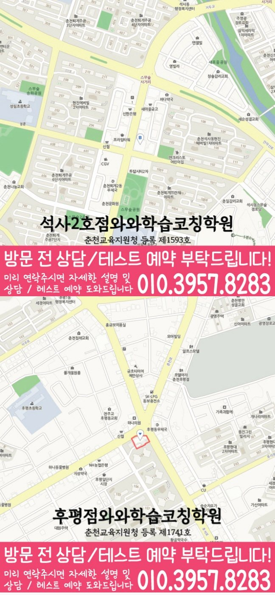

와와학습코칭센터 석사점
강원특별자치도 춘천시 지석로 85 703호
GRADE 10 MATH LOCAL GUIDE
고1 수학의 풀이 조건·검산 점검 예시를 살펴보고 풀이와 질문을 정리해 보세요. 와와학습코칭센터 석사점의 자료상 가능 학년과 실제 방문 주소도 함께 확인할 수 있습니다.
와와학습코칭센터 석사점의 수학 가능 학년은 현재 안내 자료에 기재되어 있지 않습니다. 고1 수학 수강 가능 여부를 먼저 문의해 주세요.
강원특별자치도 춘천시 지석로 85 703호
수업 시간·반 편성·정원은 상담 시 확인
춘천교육지원청 등록 제1593호
고등학교 참고: 강원고등학교, 강원대학교사범대학부설고등학교, 봉의고등학교, 성수여자고등학교, 유봉여자고등학교, 춘천고등학교, 춘천여자고등학교
학교별 수업 개설 여부는 재학 학교와 학년을 알려 주고 확인해 주세요.
통합 상담 전화 010-6839-8283 · 문의할 때 와와학습코칭센터 석사점과 학생의 학년을 말씀해 주세요.
아래는 가정에서 활용하는 일반 학습 점검 예시입니다. 현재 학교·교재에서 배우는 내용에 해당할 때 활용하고, 아직 배우지 않은 내용은 현재 진도에 맞춰 확인해 주세요. 학생의 학습 수준과 센터의 실제 수업 구성은 상담에서 확인할 수 있습니다.
계산 규칙뿐 아니라 원래 식의 조건을 유지했는지 확인했나요?
직접 확인할 예 x² − x − 6은 (x − 3)(x + 2)로 인수분해됩니다. 전개해서 원래 식과 같은지 확인하고, 분수식이라면 분모가 0이 되는 값도 따로 점검해 보세요.
주어진 범위에 입력값이 포함되는지 확인한 뒤 값을 구했나요?
직접 확인할 예 y = |x|에서 x = −2이면 y = 2입니다. x의 범위가 따로 주어졌다면 그 범위 안의 점만 표시해 보세요.
순서를 바꾸면 다른 경우인지 문제의 문장으로 확인했나요?
직접 확인할 예 5명 중 2명을 뽑는 방법은 10가지이고, 회장과 부회장으로 정하는 방법은 20가지입니다. 두 상황에서 순서가 갖는 의미를 설명해 보세요.
틀린 문제에서 놓친 조건, 처음 막힌 계산 줄, 답을 확인한 방법을 적어 보세요. 해설을 덮고 다시 풀 때 같은 줄에서 멈추는지 확인하고, 해결하지 못한 부분은 질문으로 남겨 주세요.
교재 이름·쪽수와 혼자 해결한 부분을 함께 표시하면 상담에서 현재 학습 상태를 설명하기 쉽습니다.
현재 과목명·교재·진도와 학교의 시험 범위표·수업 프린트를 준비하세요. 위의 학습 예시가 현재 배우는 범위에 해당하는지 대조하고 질문할 부분을 표시해 주세요.
계산 과정을 어디까지 설명해야 하는지, 오답의 이유를 어떻게 확인하는지, 다시 풀 문제와 결과를 어떻게 기록하는지 질문해 보세요.
고1 수학 수강 가능 여부는 위의 센터 정보에 따라 먼저 확인해야 합니다. 이 질문과 학습 예시는 센터의 확정된 수업 방식이나 제공 서비스를 뜻하지 않습니다.
현재 학교와 교재에서 배우는 내용에 해당할 때 활용하는 일반 학습 점검 예시입니다. 실제 수업 범위와 방식은 확정한 정보가 아니므로 현재 진도에 맞춰 상담에서 확인해 주세요.
분수식은 정리한 결과와 함께 원래 분모의 조건을 확인합니다. 예를 들어 (x²−1)/(x−1)을 x+1로 정리해도 원래 식에서는 x≠1입니다. 전개나 대입으로 검산한 내용과 조건을 함께 기록해 보세요.
같은 대상을 골라도 순서를 바꾸면 다른 경우인지 문제 문장에 표시해 보세요. 학습 점검 구역의 5명 중 2명 선택 예시와 회장·부회장 선정 예시를 비교하고, 서로 다른 경우로 센 이유를 질문으로 남겨 주세요.
이 페이지의 센터·가능 학년 구역에서 자료상 학년, 실제 방문 주소와 학교 참고 목록을 확인할 수 있습니다. 학교 목록은 전용 반 개설을 뜻하지 않으며, 현재 수강 조건과 교습비는 센터 상담에서 확인해 주세요.
다음은 상담 준비를 돕기 위한 가상 상황입니다.
해설을 가린 상태에서 처음 막힌 줄에 표시하고, 필요한 개념과 사용한 식을 함께 적어 봅니다. 상담에서는 같은 유형을 힌트 없이 다시 풀어 보는 확인 방법을 물어보세요.
최근 시험지에서 못 푼 문제와 오래 걸린 문제를 구분합니다. 문제를 읽는 시간, 식을 세우는 시간, 계산 시간을 나누어 보고 어느 단계부터 연습할지 질문해 보세요.


와와학습코칭센터 석사점의 위치와 석사동 생활권을 기준으로 고1 수학 상담 정보를 확인합니다. 방문 전 실제 이동 동선과 상담 가능 시간을 함께 확인해 주세요.